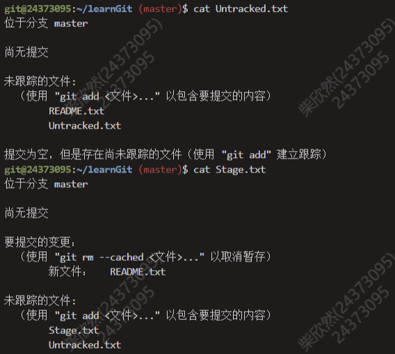
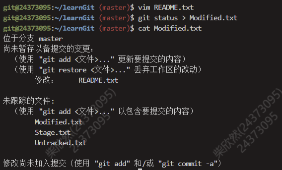
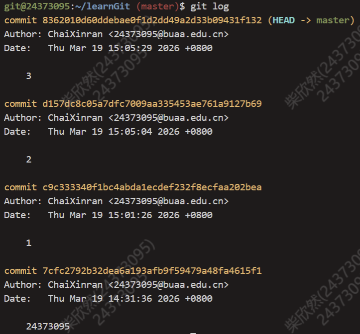
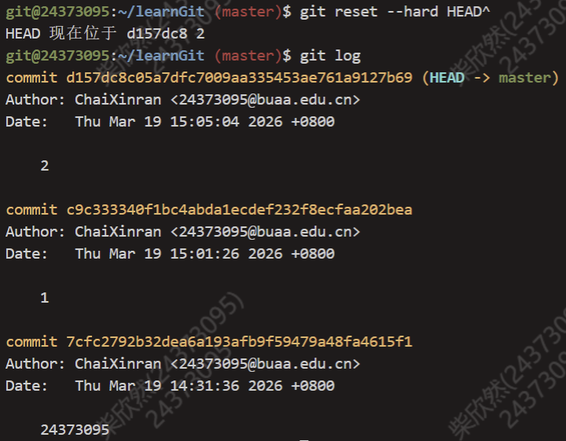
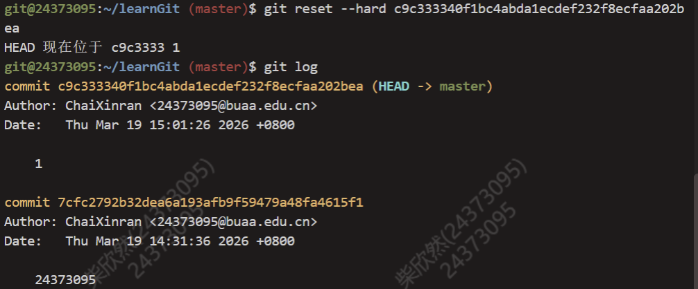
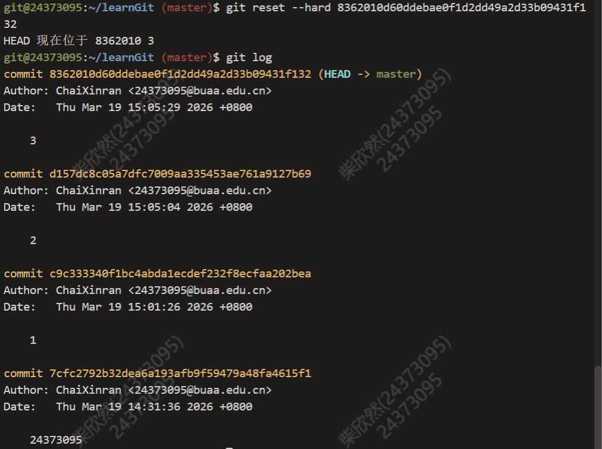
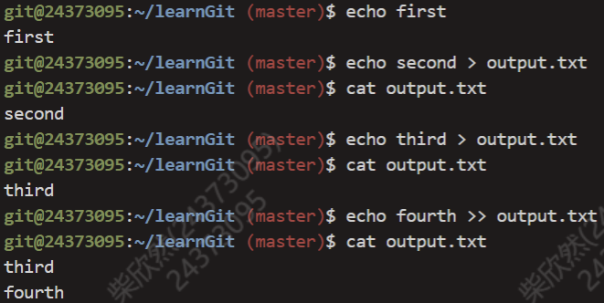
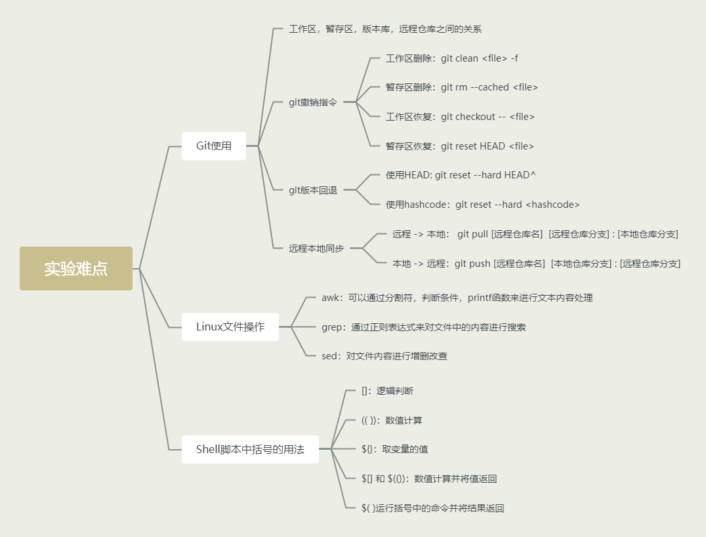

OS-Lab0
Lab0
思考题
Thinking0.1思考下列有关Git的问题：
- 在前述已初始化的~/learnGit目录下，创建一个名为README.txt的文件。执行命令gitstatus>Untracked.txt（其中的>为输出重定向，我们将在0.6.3中详细介绍）。
- 在README.txt文件中添加任意文件内容，然后使用add命令，再执行命令git status>Stage.txt。
- 提交README.txt，并在提交说明里写入自己的学号。
- 执行命令catUntracked.txt和catStage.txt，对比两次运行的结果，体会README.txt两次所处位置的不同。
- 修改README.txt文件，再执行命令gitstatus>Modified.txt。
- 执行命令catModified.txt，观察其结果和第一次执行add命令之前的status是否一样，并思考原因。
不一样。在add之前，status是未追踪，现在是已追踪有修改。


Thinking0.2仔细看看0.10，思考一下箭头中的add thefile、stage thefile和commit分别对应的是Git里的哪些命令呢？
Add the file: git add
Stage the file: git add
commit: git commit
Thinking 0.3 思考下列问题：
- 代码文件print.c 被错误删除时，应当使用什么命令将其恢复？
- 代码文件 print.c 被错误删除后，执行了 git rm print.c 命令，此时应当使用什么命令将其恢复？
- 无关文件 hello.txt 已经被添加到暂存区时，如何在不删除此文件的前提下将其移出暂存区？
- git checkout —print.c(只从工作区中删除了)
- git reset HEAD print.c (恢复到暂存区)
git checkout —print.c (恢复到工作区)
(从工作区和暂存区都删除了) - git reset HEAD hello.txt(恢复暂存区)
Thinking0.4思考下列有关Git的问题:
- 找到在/home/22xxxxxx/learnGit下刚刚创建的README.txt文件，若不存在则新建该文件。
- 在文件里加入Testing 1，gitadd，gitcommit，提交说明记为1。
- 模仿上述做法，把1分别改为2和3，再提交两次。
- 使用gitlog命令查看提交日志，看是否已经有三次提交，记下提交说明为3的哈希值a。•进行版本回退。执行命令gitreset—hardHEAD^后，再执行gitlog，观察其变化。
- 找到提交说明为1的哈希值，执行命令gitreset—hard
后，再执行gitlog，观察其变化。 - 现在已经回到了旧版本，为了再次回到新版本，执行gitreset—hard
，再执行gitlog，观察其变化。
- 有1 2 3

- 有 1 2

- 只有1

- 有1 2 3

Thinking 0.5 执行如下命令, 并查看结果
- echo first
- echo second > output.txt
- echo third > output.txt
- echo forth >> output.txt
- 标准输出first
- 新建output.txt，里面有second
- 内容覆盖为third
- 内容追加，最终为 third \n fourth

Thinking 0.6 使用你知道的方法（包括重定向）创建下图内容的文件（文件命名为test），将创建该文件的命令序列保存在command文件中，并将test文件作为批处理文件运行，将运行结果输出至result文件中。给出command文件和result文件的内容，并对最后的结果进行解释说明（可以从test文件的内容入手）. 具体实现的过程中思考下列问题: echo echo Shell Start 与 echo
echo Shell Start效果是否有区别; echo echo $c>file1与echoecho $c>file1效果是否有区别.
1 | \\command |
过程说明:
- 脚本定义了a=1,b=2.通过c=$[$a+$b],算术扩展计算出c=3。
- 脚本将变量值分别存入file1,file2,file3。
- 使用cat命令将3个文件的内容合并到file4。
- result上半部分是脚本运行时的日志信息，下半部分是脚本执行最后一行命令。
Q1：echo echo Shell Start 与 echo `echo Shell Start`
- 输出 echo Shell Start(打印复读机)
- 输出 Shell Start(执行并取回结果)
Q2:echo echo $c>file1与echo `echo $c>file1` 效果是否有区别
- file1 内容echo 3
- file1 内容3，屏幕输出换行
(优先执行’’里的命令)
难点分析
主要在于对各种指令的熟悉和应用(尤其是sed,grep,awk)，对shell脚本和Makefile文件的撰写，以及对git的使用，总体上只要熟悉了各种操作就没什么问题。
这里借用一下hyggge’s Blog中的图片，非常全面。

实验体会
因为在完成作业之前我认真阅读了2到3遍指导书，所以Lab0课下很顺利，大概一个上午就完成了。没有什么特别记忆深刻的地方。
但是在周三的上机实验，由于将近一周没有再次熟悉操作，感觉十分生疏，甚至非常简单的exam也只拿了90分。还是不能迅速完成课下然后再也不看了，应该多多熟悉，更加深入思考，不能只停留在完成作业就好了。
原创说明
参考了往届三位学长学姐的博客。感谢他们的精心整理和付出。
https://hyggge.github.io/2022/03/21/os/os-lab0-shi-yan-bao-gao/
https://yanna-zy.github.io/2023/03/19/BUAA-OS-0/
https://demiurge-zby.github.io/p/buaa-os-lab0-%E9%A2%84%E5%A4%87%E7%9F%A5%E8%AF%86/?t=1773901742315